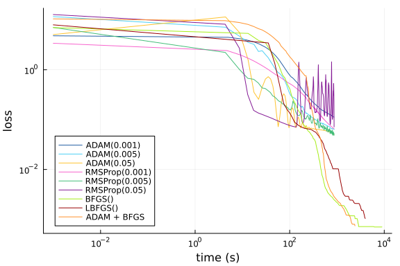
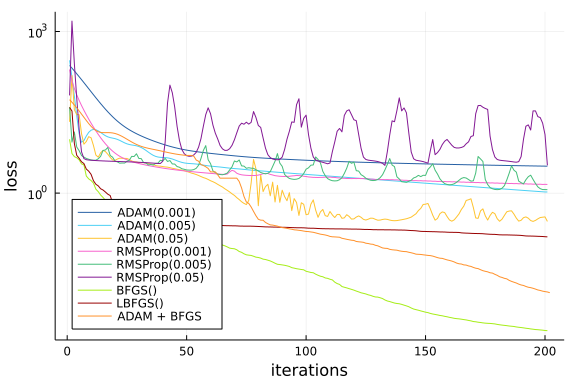

Hamilton-Jacobi PDE Physics-Informed Neural Network (PINN) Optimizer Benchmarks
Adapted from NeuralPDE: Automating Physics-Informed Neural Networks (PINNs) with Error Approximations. Uses the NeuralPDE.jl library from the SciML Scientific Machine Learning Open Source Organization for the implementation of physics-informed neural networks (PINNs) and other science-guided AI techniques.
Setup
using NeuralPDE, OptimizationFlux, ModelingToolkit, Optimization, OptimizationOptimJL
using Lux, Plots
import ModelingToolkit: Interval, infimum, supremumfunction solve(opt)
strategy = QuadratureTraining()
## DECLARATIONS
@parameters t x1 x2 x3 x4
@variables u(..)
Dt = Differential(t)
Dx1 = Differential(x1)
Dx2 = Differential(x2)
Dx3 = Differential(x3)
Dx4 = Differential(x4)
Dxx1 = Differential(x1)^2
Dxx2 = Differential(x2)^2
Dxx3 = Differential(x3)^2
Dxx4 = Differential(x4)^2
# Discretization
tmax = 1.0
x1width = 1.0
x2width = 1.0
x3width = 1.0
x4width = 1.0
tMeshNum = 10
x1MeshNum = 10
x2MeshNum = 10
x3MeshNum = 10
x4MeshNum = 10
dt = tmax/tMeshNum
dx1 = x1width/x1MeshNum
dx2 = x2width/x2MeshNum
dx3 = x3width/x3MeshNum
dx4 = x4width/x4MeshNum
domains = [t ∈ Interval(0.0,tmax),
x1 ∈ Interval(0.0,x1width),
x2 ∈ Interval(0.0,x2width),
x3 ∈ Interval(0.0,x3width),
x4 ∈ Interval(0.0,x4width)]
ts = 0.0 : dt : tmax
x1s = 0.0 : dx1 : x1width
x2s = 0.0 : dx2 : x2width
x3s = 0.0 : dx3 : x3width
x4s = 0.0 : dx4 : x4width
λ = 1.0f0
# Operators
Δu = Dxx1(u(t,x1,x2,x3,x4)) + Dxx2(u(t,x1,x2,x3,x4)) + Dxx3(u(t,x1,x2,x3,x4)) + Dxx4(u(t,x1,x2,x3,x4)) # Laplacian
∇u = [Dx1(u(t,x1,x2,x3,x4)), Dx2(u(t,x1,x2,x3,x4)),Dx3(u(t,x1,x2,x3,x4)),Dx4(u(t,x1,x2,x3,x4))]
# Equation
eq = Dt(u(t,x1,x2,x3,x4)) + Δu - λ*sum(∇u.^2) ~ 0 #HAMILTON-JACOBI-BELLMAN EQUATION
terminalCondition = log((1 + x1*x1 + x2*x2 + x3*x3 + x4*x4)/2) # see PNAS paper
bcs = [u(tmax,x1,x2,x3,x4) ~ terminalCondition] #PNAS paper again
## NEURAL NETWORK
n = 20 #neuron number
chain = Lux.Chain(Lux.Dense(5,n,tanh),Lux.Dense(n,n,tanh),Lux.Dense(n,1)) #Neural network from OptimizationFlux library
discretization = PhysicsInformedNN(chain, strategy)
indvars = [t,x1,x2,x3,x4] #phisically independent variables
depvars = [u] #dependent (target) variable
loss = []
initial_time = 0
times = []
cb = function (p,l)
if initial_time == 0
initial_time = time()
end
push!(times, time() - initial_time)
#println("Current loss for $opt is: $l")
push!(loss, l)
return false
end
@named pde_system = PDESystem(eq, bcs, domains, indvars, depvars)
prob = discretize(pde_system, discretization)
if opt == "both"
res = Optimization.solve(prob, ADAM(); callback = cb, maxiters=50)
prob = remake(prob,u0=res.minimizer)
res = Optimization.solve(prob, BFGS(); callback = cb, maxiters=150)
else
res = Optimization.solve(prob, opt; callback = cb, maxiters=200)
end
times[1] = 0.001
return loss, times #add numeric solution
endsolve (generic function with 1 method)opt1 = ADAM()
opt2 = ADAM(0.005)
opt3 = ADAM(0.05)
opt4 = RMSProp()
opt5 = RMSProp(0.005)
opt6 = RMSProp(0.05)
opt7 = OptimizationOptimJL.BFGS()
opt8 = OptimizationOptimJL.LBFGS()Optim.LBFGS{Nothing, LineSearches.InitialStatic{Float64}, LineSearches.Hage
rZhang{Float64, Base.RefValue{Bool}}, Optim.var"#19#21"}(10, LineSearches.I
nitialStatic{Float64}
alpha: Float64 1.0
scaled: Bool false
, LineSearches.HagerZhang{Float64, Base.RefValue{Bool}}
delta: Float64 0.1
sigma: Float64 0.9
alphamax: Float64 Inf
rho: Float64 5.0
epsilon: Float64 1.0e-6
gamma: Float64 0.66
linesearchmax: Int64 50
psi3: Float64 0.1
display: Int64 0
mayterminate: Base.RefValue{Bool}
, nothing, Optim.var"#19#21"(), Optim.Flat(), true)Solve
loss_1, times_1 = solve(opt1)
loss_2, times_2 = solve(opt2)
loss_3, times_3 = solve(opt3)
loss_4, times_4 = solve(opt4)
loss_5, times_5 = solve(opt5)
loss_6, times_6 = solve(opt6)
loss_7, times_7 = solve(opt7)
loss_8, times_8 = solve(opt8)
loss_9, times_9 = solve("both")(Any[58.50292399621151, 53.550995599346145, 48.94262125358286, 44.676860295
60858, 40.74923671579711, 37.15215726265549, 33.87735323777565, 30.91492147
5730196, 28.251805906064234, 25.87477252502405 … 0.008184063578029442, 0.
008068540595508537, 0.007900963711302498, 0.007682878947461265, 0.007412722
491813935, 0.007058565228459336, 0.00686699629408717, 0.0066651730604333015
, 0.006495476630667968, 0.006311783832459027], Any[0.001, 0.261291027069091
8, 0.5163540840148926, 0.7872140407562256, 1.0426139831542969, 1.3134720325
46997, 1.568864107131958, 1.8237080574035645, 2.0946879386901855, 2.3501670
360565186 … 123.86953210830688, 124.41660594940186, 124.93901300430298, 1
25.50444102287292, 126.06708908081055, 126.61215591430664, 127.133630037307
74, 127.67642092704773, 128.2182149887085, 128.73882603645325])Results
p = plot([times_1, times_2, times_3, times_4, times_5, times_6, times_7, times_8, times_9], [loss_1, loss_2, loss_3, loss_4, loss_5, loss_6, loss_7, loss_8, loss_9],xlabel="time (s)", ylabel="loss", xscale=:log10, yscale=:log10, labels=["ADAM(0.001)" "ADAM(0.005)" "ADAM(0.05)" "RMSProp(0.001)" "RMSProp(0.005)" "RMSProp(0.05)" "BFGS()" "LBFGS()" "ADAM + BFGS"], legend=:bottomleft, linecolor=["#2660A4" "#4CD0F4" "#FEC32F" "#F763CD" "#44BD79" "#831894" "#A6ED18" "#980000" "#FF912B"])
p = plot([loss_1, loss_2, loss_3, loss_4, loss_5, loss_6, loss_7, loss_8, loss_9], xlabel="iterations", ylabel="loss", yscale=:log10, labels=["ADAM(0.001)" "ADAM(0.005)" "ADAM(0.05)" "RMSProp(0.001)" "RMSProp(0.005)" "RMSProp(0.05)" "BFGS()" "LBFGS()" "ADAM + BFGS"], legend=:bottomleft, linecolor=["#2660A4" "#4CD0F4" "#FEC32F" "#F763CD" "#44BD79" "#831894" "#A6ED18" "#980000" "#FF912B"])
@show loss_1[end], loss_2[end], loss_3[end], loss_4[end], loss_5[end], loss_6[end], loss_7[end], loss_8[end], loss_9[end](loss_1[end], loss_2[end], loss_3[end], loss_4[end], loss_5[end], loss_6[en
d], loss_7[end], loss_8[end], loss_9[end]) = (2.5835739951328267, 0.5227691
789303975, 0.6041717101099481, 1.0365058850504243, 1.4265196344795572, 2.66
56707703862663, 0.6522855476336697, 0.193396873454065, 0.006311783832459027
)
(2.5835739951328267, 0.5227691789303975, 0.6041717101099481, 1.036505885050
4243, 1.4265196344795572, 2.6656707703862663, 0.6522855476336697, 0.1933968
73454065, 0.006311783832459027)Appendix
These benchmarks are a part of the SciMLBenchmarks.jl repository, found at: https://github.com/SciML/SciMLBenchmarks.jl. For more information on high-performance scientific machine learning, check out the SciML Open Source Software Organization https://sciml.ai.
To locally run this benchmark, do the following commands:
using SciMLBenchmarks
SciMLBenchmarks.weave_file("benchmarks/PINNOptimizers","hamilton_jacobi.jmd")Computer Information:
Julia Version 1.7.3
Commit 742b9abb4d (2022-05-06 12:58 UTC)
Platform Info:
OS: Linux (x86_64-pc-linux-gnu)
CPU: AMD EPYC 7502 32-Core Processor
WORD_SIZE: 64
LIBM: libopenlibm
LLVM: libLLVM-12.0.1 (ORCJIT, znver2)
Environment:
JULIA_CPU_THREADS = 128
BUILDKITE_PLUGIN_JULIA_CACHE_DIR = /cache/julia-buildkite-plugin
JULIA_DEPOT_PATH = /cache/julia-buildkite-plugin/depots/5b300254-1738-4989-ae0a-f4d2d937f953
Package Information:
Status `/cache/build/exclusive-amdci1-0/julialang/scimlbenchmarks-dot-jl/benchmarks/PINNOptimizers/Project.toml`
[b2108857] Lux v0.4.11
[961ee093] ModelingToolkit v8.18.1
[315f7962] NeuralPDE v5.0.0
[7f7a1694] Optimization v3.8.1
[253f991c] OptimizationFlux v0.1.0
[36348300] OptimizationOptimJL v0.1.2
[91a5bcdd] Plots v1.31.4
[31c91b34] SciMLBenchmarks v0.1.0And the full manifest:
Status `/cache/build/exclusive-amdci1-0/julialang/scimlbenchmarks-dot-jl/benchmarks/PINNOptimizers/Manifest.toml`
[c3fe647b] AbstractAlgebra v0.27.1
[621f4979] AbstractFFTs v1.2.1
[1520ce14] AbstractTrees v0.4.2
[7d9f7c33] Accessors v0.1.18
[79e6a3ab] Adapt v3.3.3
[dce04be8] ArgCheck v2.3.0
[ec485272] ArnoldiMethod v0.2.0
[4fba245c] ArrayInterface v6.0.21
[30b0a656] ArrayInterfaceCore v0.1.15
[6ba088a2] ArrayInterfaceGPUArrays v0.2.1
[015c0d05] ArrayInterfaceOffsetArrays v0.1.6
[b0d46f97] ArrayInterfaceStaticArrays v0.1.4
[dd5226c6] ArrayInterfaceStaticArraysCore v0.1.0
[15f4f7f2] AutoHashEquals v0.2.0
[ab4f0b2a] BFloat16s v0.2.0
[198e06fe] BangBang v0.3.36
[9718e550] Baselet v0.1.1
[e2ed5e7c] Bijections v0.1.4
[62783981] BitTwiddlingConvenienceFunctions v0.1.4
[fa961155] CEnum v0.4.2
[2a0fbf3d] CPUSummary v0.1.25
[00ebfdb7] CSTParser v3.3.6
[052768ef] CUDA v3.12.0
[49dc2e85] Calculus v0.5.1
[082447d4] ChainRules v1.39.1
[d360d2e6] ChainRulesCore v1.15.3
[9e997f8a] ChangesOfVariables v0.1.4
[fb6a15b2] CloseOpenIntervals v0.1.10
[944b1d66] CodecZlib v0.7.0
[35d6a980] ColorSchemes v3.19.0
[3da002f7] ColorTypes v0.11.4
[c3611d14] ColorVectorSpace v0.9.9
[5ae59095] Colors v0.12.8
[861a8166] Combinatorics v1.0.2
[a80b9123] CommonMark v0.8.6
[38540f10] CommonSolve v0.2.1
[bbf7d656] CommonSubexpressions v0.3.0
[34da2185] Compat v3.45.0
[b0b7db55] ComponentArrays v0.12.4
[b152e2b5] CompositeTypes v0.1.2
[a33af91c] CompositionsBase v0.1.1
[8f4d0f93] Conda v1.7.0
[88cd18e8] ConsoleProgressMonitor v0.1.2
[187b0558] ConstructionBase v1.4.0
[6add18c4] ContextVariablesX v0.1.2
[d38c429a] Contour v0.6.2
[adafc99b] CpuId v0.3.1
[a8cc5b0e] Crayons v4.1.1
[667455a9] Cubature v1.5.1
[9a962f9c] DataAPI v1.10.0
[864edb3b] DataStructures v0.18.13
[e2d170a0] DataValueInterfaces v1.0.0
[244e2a9f] DefineSingletons v0.1.2
[b429d917] DensityInterface v0.4.0
[2b5f629d] DiffEqBase v6.94.4
[459566f4] DiffEqCallbacks v2.23.1
[77a26b50] DiffEqNoiseProcess v5.12.0
[163ba53b] DiffResults v1.0.3
[b552c78f] DiffRules v1.11.0
[b4f34e82] Distances v0.10.7
[31c24e10] Distributions v0.25.66
[ffbed154] DocStringExtensions v0.8.6
[5b8099bc] DomainSets v0.5.11
[fa6b7ba4] DualNumbers v0.6.8
[7c1d4256] DynamicPolynomials v0.4.5
[d4d017d3] ExponentialUtilities v1.18.0
[e2ba6199] ExprTools v0.1.8
[c87230d0] FFMPEG v0.4.1
[cc61a311] FLoops v0.2.0
[b9860ae5] FLoopsBase v0.1.1
[7034ab61] FastBroadcast v0.2.1
[9aa1b823] FastClosures v0.3.2
[29a986be] FastLapackInterface v1.1.0
[1a297f60] FillArrays v0.13.2
[6a86dc24] FiniteDiff v2.13.1
[53c48c17] FixedPointNumbers v0.8.4
[587475ba] Flux v0.13.4
[9c68100b] FoldsThreads v0.1.1
[59287772] Formatting v0.4.2
[f6369f11] ForwardDiff v0.10.30
[069b7b12] FunctionWrappers v1.1.2
[d9f16b24] Functors v0.2.8
[0c68f7d7] GPUArrays v8.4.2
[46192b85] GPUArraysCore v0.1.1
[61eb1bfa] GPUCompiler v0.16.2
[28b8d3ca] GR v0.66.0
[c145ed77] GenericSchur v0.5.3
[5c1252a2] GeometryBasics v0.4.2
[d7ba0133] Git v1.2.1
[86223c79] Graphs v1.7.1
[42e2da0e] Grisu v1.0.2
[0b43b601] Groebner v0.2.8
[d5909c97] GroupsCore v0.4.0
[19dc6840] HCubature v1.5.0
[cd3eb016] HTTP v1.2.0
[eafb193a] Highlights v0.4.5
[3e5b6fbb] HostCPUFeatures v0.1.8
[34004b35] HypergeometricFunctions v0.3.11
[7073ff75] IJulia v1.23.3
[7869d1d1] IRTools v0.4.6
[615f187c] IfElse v0.1.1
[d25df0c9] Inflate v0.1.2
[83e8ac13] IniFile v0.5.1
[22cec73e] InitialValues v0.3.1
[18e54dd8] IntegerMathUtils v0.1.0
[de52edbc] Integrals v3.1.0
[c31f79ba] IntegralsCubature v0.2.0
[8197267c] IntervalSets v0.7.1
[3587e190] InverseFunctions v0.1.7
[92d709cd] IrrationalConstants v0.1.1
[c8e1da08] IterTools v1.4.0
[42fd0dbc] IterativeSolvers v0.9.2
[82899510] IteratorInterfaceExtensions v1.0.0
[692b3bcd] JLLWrappers v1.4.1
[682c06a0] JSON v0.21.3
[98e50ef6] JuliaFormatter v1.0.7
[b14d175d] JuliaVariables v0.2.4
[ccbc3e58] JumpProcesses v9.0.1
[ef3ab10e] KLU v0.3.0
[ba0b0d4f] Krylov v0.8.3
[0b1a1467] KrylovKit v0.5.4
[929cbde3] LLVM v4.14.0
[b964fa9f] LaTeXStrings v1.3.0
[2ee39098] LabelledArrays v1.11.1
[23fbe1c1] Latexify v0.15.16
[a5e1c1ea] LatinHypercubeSampling v1.8.0
[73f95e8e] LatticeRules v0.0.1
[10f19ff3] LayoutPointers v0.1.10
[2d8b4e74] LevyArea v1.0.0
[d3d80556] LineSearches v7.1.1
[7ed4a6bd] LinearSolve v1.23.0
[2ab3a3ac] LogExpFunctions v0.3.16
[e6f89c97] LoggingExtras v0.4.9
[bdcacae8] LoopVectorization v0.12.120
[b2108857] Lux v0.4.11
[d8e11817] MLStyle v0.4.13
[f1d291b0] MLUtils v0.2.9
[1914dd2f] MacroTools v0.5.9
[d125e4d3] ManualMemory v0.1.8
[739be429] MbedTLS v1.1.1
[442fdcdd] Measures v0.3.1
[e9d8d322] Metatheory v1.3.4
[128add7d] MicroCollections v0.1.2
[e1d29d7a] Missings v1.0.2
[961ee093] ModelingToolkit v8.18.1
[4886b29c] MonteCarloIntegration v0.0.3
[46d2c3a1] MuladdMacro v0.2.2
[102ac46a] MultivariatePolynomials v0.4.6
[ffc61752] Mustache v1.0.14
[d8a4904e] MutableArithmetics v1.0.4
[d41bc354] NLSolversBase v7.8.2
[2774e3e8] NLsolve v4.5.1
[872c559c] NNlib v0.8.9
[a00861dc] NNlibCUDA v0.2.4
[77ba4419] NaNMath v0.3.7
[71a1bf82] NameResolution v0.1.5
[315f7962] NeuralPDE v5.0.0
[8913a72c] NonlinearSolve v0.3.21
[6fe1bfb0] OffsetArrays v1.12.7
[429524aa] Optim v1.7.1
[3bd65402] Optimisers v0.2.8
[7f7a1694] Optimization v3.8.1
[253f991c] OptimizationFlux v0.1.0
[36348300] OptimizationOptimJL v0.1.2
[bac558e1] OrderedCollections v1.4.1
[1dea7af3] OrdinaryDiffEq v6.19.2
[90014a1f] PDMats v0.11.16
[d96e819e] Parameters v0.12.3
[69de0a69] Parsers v2.3.2
[ccf2f8ad] PlotThemes v3.0.0
[995b91a9] PlotUtils v1.3.0
[91a5bcdd] Plots v1.31.4
[e409e4f3] PoissonRandom v0.4.1
[f517fe37] Polyester v0.6.14
[1d0040c9] PolyesterWeave v0.1.7
[85a6dd25] PositiveFactorizations v0.2.4
[d236fae5] PreallocationTools v0.4.0
[21216c6a] Preferences v1.3.0
[8162dcfd] PrettyPrint v0.2.0
[27ebfcd6] Primes v0.5.3
[33c8b6b6] ProgressLogging v0.1.4
[92933f4c] ProgressMeter v1.7.2
[1fd47b50] QuadGK v2.4.2
[8a4e6c94] QuasiMonteCarlo v0.2.9
[74087812] Random123 v1.5.0
[fb686558] RandomExtensions v0.4.3
[e6cf234a] RandomNumbers v1.5.3
[c1ae055f] RealDot v0.1.0
[3cdcf5f2] RecipesBase v1.2.1
[01d81517] RecipesPipeline v0.6.2
[731186ca] RecursiveArrayTools v2.31.2
[f2c3362d] RecursiveFactorization v0.2.11
[189a3867] Reexport v1.2.2
[42d2dcc6] Referenceables v0.1.2
[05181044] RelocatableFolders v0.3.0
[ae029012] Requires v1.3.0
[ae5879a3] ResettableStacks v1.1.1
[37e2e3b7] ReverseDiff v1.14.1
[79098fc4] Rmath v0.7.0
[7e49a35a] RuntimeGeneratedFunctions v0.5.3
[3cdde19b] SIMDDualNumbers v0.1.1
[94e857df] SIMDTypes v0.1.0
[476501e8] SLEEFPirates v0.6.33
[0bca4576] SciMLBase v1.45.0
[31c91b34] SciMLBenchmarks v0.1.0
[6c6a2e73] Scratch v1.1.1
[efcf1570] Setfield v0.8.2
[605ecd9f] ShowCases v0.1.0
[992d4aef] Showoff v1.0.3
[777ac1f9] SimpleBufferStream v1.1.0
[699a6c99] SimpleTraits v0.9.4
[ed01d8cd] Sobol v1.5.0
[b85f4697] SoftGlobalScope v1.1.0
[a2af1166] SortingAlgorithms v1.0.1
[47a9eef4] SparseDiffTools v1.24.0
[276daf66] SpecialFunctions v2.1.7
[171d559e] SplittablesBase v0.1.14
[860ef19b] StableRNGs v1.0.0
[aedffcd0] Static v0.7.6
[90137ffa] StaticArrays v1.5.2
[1e83bf80] StaticArraysCore v1.0.1
[82ae8749] StatsAPI v1.4.0
[2913bbd2] StatsBase v0.33.20
[4c63d2b9] StatsFuns v1.0.1
[789caeaf] StochasticDiffEq v6.51.0
[7792a7ef] StrideArraysCore v0.3.15
[69024149] StringEncodings v0.3.5
[09ab397b] StructArrays v0.6.11
[d1185830] SymbolicUtils v0.19.11
[0c5d862f] Symbolics v4.10.2
[3783bdb8] TableTraits v1.0.1
[bd369af6] Tables v1.7.0
[62fd8b95] TensorCore v0.1.1
[8ea1fca8] TermInterface v0.2.3
[5d786b92] TerminalLoggers v0.1.0
[8290d209] ThreadingUtilities v0.5.0
[ac1d9e8a] ThreadsX v0.1.10
[a759f4b9] TimerOutputs v0.5.20
[0796e94c] Tokenize v0.5.24
[3bb67fe8] TranscodingStreams v0.9.6
[28d57a85] Transducers v0.4.73
[a2a6695c] TreeViews v0.3.0
[d5829a12] TriangularSolve v0.1.12
[5c2747f8] URIs v1.4.0
[3a884ed6] UnPack v1.0.2
[1cfade01] UnicodeFun v0.4.1
[1986cc42] Unitful v1.11.0
[41fe7b60] Unzip v0.1.2
[3d5dd08c] VectorizationBase v0.21.43
[81def892] VersionParsing v1.3.0
[19fa3120] VertexSafeGraphs v0.2.0
[44d3d7a6] Weave v0.10.9
[ddb6d928] YAML v0.4.7
[c2297ded] ZMQ v1.2.1
[e88e6eb3] Zygote v0.6.41
[700de1a5] ZygoteRules v0.2.2
[6e34b625] Bzip2_jll v1.0.8+0
[83423d85] Cairo_jll v1.16.1+1
[7bc98958] Cubature_jll v1.0.5+0
[5ae413db] EarCut_jll v2.2.3+0
[2e619515] Expat_jll v2.4.8+0
[b22a6f82] FFMPEG_jll v4.4.2+0
[a3f928ae] Fontconfig_jll v2.13.93+0
[d7e528f0] FreeType2_jll v2.10.4+0
[559328eb] FriBidi_jll v1.0.10+0
[0656b61e] GLFW_jll v3.3.6+0
[d2c73de3] GR_jll v0.66.0+0
[78b55507] Gettext_jll v0.21.0+0
[f8c6e375] Git_jll v2.34.1+0
[7746bdde] Glib_jll v2.68.3+2
[3b182d85] Graphite2_jll v1.3.14+0
[2e76f6c2] HarfBuzz_jll v2.8.1+1
[aacddb02] JpegTurbo_jll v2.1.2+0
[c1c5ebd0] LAME_jll v3.100.1+0
[88015f11] LERC_jll v3.0.0+1
[dad2f222] LLVMExtra_jll v0.0.16+0
[dd4b983a] LZO_jll v2.10.1+0
[e9f186c6] Libffi_jll v3.2.2+1
[d4300ac3] Libgcrypt_jll v1.8.7+0
[7e76a0d4] Libglvnd_jll v1.3.0+3
[7add5ba3] Libgpg_error_jll v1.42.0+0
[94ce4f54] Libiconv_jll v1.16.1+1
[4b2f31a3] Libmount_jll v2.35.0+0
[89763e89] Libtiff_jll v4.4.0+0
[38a345b3] Libuuid_jll v2.36.0+0
[e7412a2a] Ogg_jll v1.3.5+1
[458c3c95] OpenSSL_jll v1.1.17+0
[efe28fd5] OpenSpecFun_jll v0.5.5+0
[91d4177d] Opus_jll v1.3.2+0
[2f80f16e] PCRE_jll v8.44.0+0
[30392449] Pixman_jll v0.40.1+0
[ea2cea3b] Qt5Base_jll v5.15.3+1
[f50d1b31] Rmath_jll v0.3.0+0
[a2964d1f] Wayland_jll v1.19.0+0
[2381bf8a] Wayland_protocols_jll v1.25.0+0
[02c8fc9c] XML2_jll v2.9.14+0
[aed1982a] XSLT_jll v1.1.34+0
[4f6342f7] Xorg_libX11_jll v1.6.9+4
[0c0b7dd1] Xorg_libXau_jll v1.0.9+4
[935fb764] Xorg_libXcursor_jll v1.2.0+4
[a3789734] Xorg_libXdmcp_jll v1.1.3+4
[1082639a] Xorg_libXext_jll v1.3.4+4
[d091e8ba] Xorg_libXfixes_jll v5.0.3+4
[a51aa0fd] Xorg_libXi_jll v1.7.10+4
[d1454406] Xorg_libXinerama_jll v1.1.4+4
[ec84b674] Xorg_libXrandr_jll v1.5.2+4
[ea2f1a96] Xorg_libXrender_jll v0.9.10+4
[14d82f49] Xorg_libpthread_stubs_jll v0.1.0+3
[c7cfdc94] Xorg_libxcb_jll v1.13.0+3
[cc61e674] Xorg_libxkbfile_jll v1.1.0+4
[12413925] Xorg_xcb_util_image_jll v0.4.0+1
[2def613f] Xorg_xcb_util_jll v0.4.0+1
[975044d2] Xorg_xcb_util_keysyms_jll v0.4.0+1
[0d47668e] Xorg_xcb_util_renderutil_jll v0.3.9+1
[c22f9ab0] Xorg_xcb_util_wm_jll v0.4.1+1
[35661453] Xorg_xkbcomp_jll v1.4.2+4
[33bec58e] Xorg_xkeyboard_config_jll v2.27.0+4
[c5fb5394] Xorg_xtrans_jll v1.4.0+3
[8f1865be] ZeroMQ_jll v4.3.4+0
[3161d3a3] Zstd_jll v1.5.2+0
[a4ae2306] libaom_jll v3.4.0+0
[0ac62f75] libass_jll v0.15.1+0
[f638f0a6] libfdk_aac_jll v2.0.2+0
[b53b4c65] libpng_jll v1.6.38+0
[a9144af2] libsodium_jll v1.0.20+0
[f27f6e37] libvorbis_jll v1.3.7+1
[1270edf5] x264_jll v2021.5.5+0
[dfaa095f] x265_jll v3.5.0+0
[d8fb68d0] xkbcommon_jll v0.9.1+5
[0dad84c5] ArgTools v1.1.1
[56f22d72] Artifacts
[2a0f44e3] Base64
[ade2ca70] Dates
[8bb1440f] DelimitedFiles
[8ba89e20] Distributed
[f43a241f] Downloads v1.6.0
[7b1f6079] FileWatching
[9fa8497b] Future
[b77e0a4c] InteractiveUtils
[4af54fe1] LazyArtifacts
[b27032c2] LibCURL v0.6.3
[76f85450] LibGit2
[8f399da3] Libdl
[37e2e46d] LinearAlgebra
[56ddb016] Logging
[d6f4376e] Markdown
[a63ad114] Mmap
[ca575930] NetworkOptions v1.2.0
[44cfe95a] Pkg v1.8.0
[de0858da] Printf
[3fa0cd96] REPL
[9a3f8284] Random
[ea8e919c] SHA v0.7.0
[9e88b42a] Serialization
[1a1011a3] SharedArrays
[6462fe0b] Sockets
[2f01184e] SparseArrays
[10745b16] Statistics
[4607b0f0] SuiteSparse
[fa267f1f] TOML v1.0.0
[a4e569a6] Tar v1.10.0
[8dfed614] Test
[cf7118a7] UUIDs
[4ec0a83e] Unicode
[e66e0078] CompilerSupportLibraries_jll v0.5.2+0
[deac9b47] LibCURL_jll v7.81.0+0
[29816b5a] LibSSH2_jll v1.10.2+0
[c8ffd9c3] MbedTLS_jll v2.28.0+0
[14a3606d] MozillaCACerts_jll v2022.2.1
[4536629a] OpenBLAS_jll v0.3.20+0
[05823500] OpenLibm_jll v0.8.1+0
[efcefdf7] PCRE2_jll v10.40.0+0
[bea87d4a] SuiteSparse_jll v5.10.1+0
[83775a58] Zlib_jll v1.2.12+3
[8e850b90] libblastrampoline_jll v5.1.0+0
[8e850ede] nghttp2_jll v1.41.0+1
[3f19e933] p7zip_jll v17.4.0+0